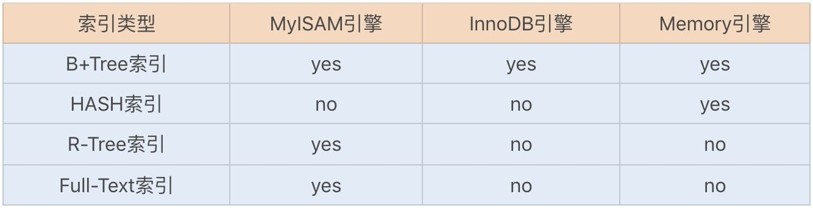
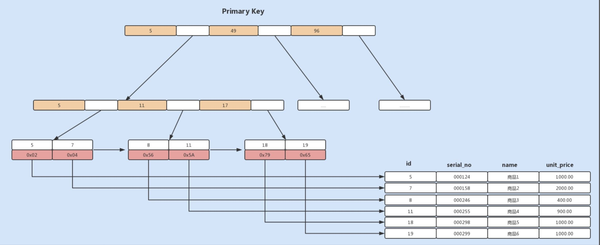
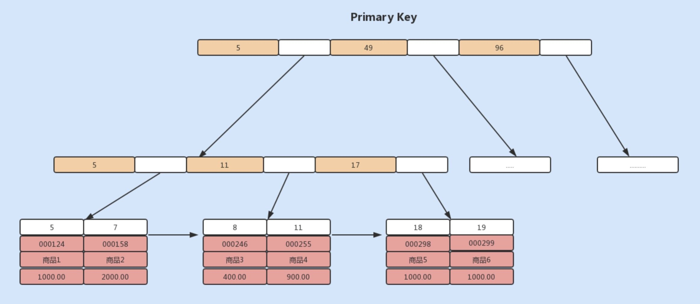
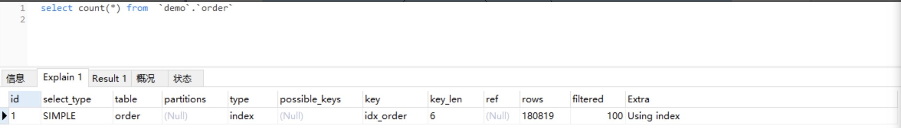
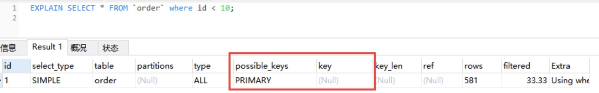
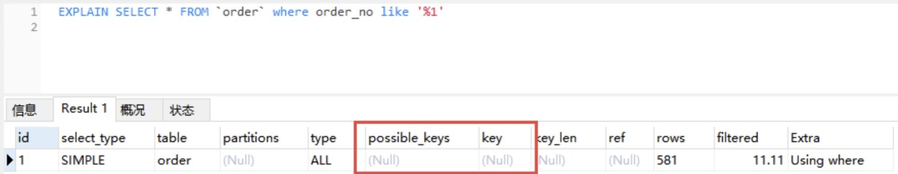
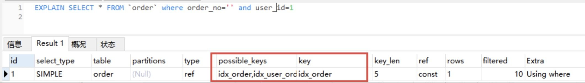
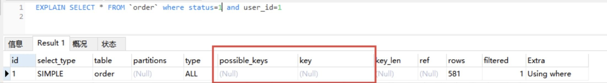
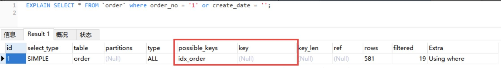

- 00 开篇词你为什么需要学习并发编程？.md.html
- 01 如何制定性能调优标准？.md.html
- 02 如何制定性能调优策略？.md.html
- 03 字符串性能优化不容小觑，百M内存轻松存储几十G数据.md.html
- 04 慎重使用正则表达式.md.html
- 05 ArrayList还是LinkedList？使用不当性能差千倍.md.html
- 06 Stream如何提高遍历集合效率？.md.html
- 07 深入浅出HashMap的设计与优化.md.html
- 08 网络通信优化之IO模型：如何解决高并发下IO瓶颈？.md.html
- 09 网络通信优化之序列化：避免使用Java序列化.md.html
- 10 网络通信优化之通信协议：如何优化RPC网络通信？.md.html
- 11 答疑课堂：深入了解NIO的优化实现原理.md.html
- 12 多线程之锁优化（上）：深入了解Synchronized同步锁的优化方法.md.html
- 13 多线程之锁优化（中）：深入了解Lock同步锁的优化方法.md.html
- 14 多线程之锁优化（下）：使用乐观锁优化并行操作.md.html
- 15 多线程调优（上）：哪些操作导致了上下文切换？.md.html
- 16 多线程调优（下）：如何优化多线程上下文切换？.md.html
- 17 并发容器的使用：识别不同场景下最优容器.md.html
- 18 如何设置线程池大小？.md.html
- 19 如何用协程来优化多线程业务？.md.html
- 20 磨刀不误砍柴工：欲知JVM调优先了解JVM内存模型.md.html
- 21 深入JVM即时编译器JIT，优化Java编译.md.html
- 22 如何优化垃圾回收机制？.md.html
- 23 如何优化JVM内存分配？.md.html
- 24 内存持续上升，我该如何排查问题？.md.html
- 25 答疑课堂：模块四热点问题解答.md.html
- 26 单例模式：如何创建单一对象优化系统性能？.md.html
- 27 原型模式与享元模式：提升系统性能的利器.md.html
- 28 如何使用设计模式优化并发编程？.md.html
- 29 生产者消费者模式：电商库存设计优化.md.html
- 30 装饰器模式：如何优化电商系统中复杂的商品价格策略？.md.html
- 31 答疑课堂：模块五思考题集锦.md.html
- 32 MySQL调优之SQL语句：如何写出高性能SQL语句？.md.html
- 33 MySQL调优之事务：高并发场景下的数据库事务调优.md.html
- 34 MySQL调优之索引：索引的失效与优化.md.html
- 35 记一次线上SQL死锁事故：如何避免死锁？.md.html
- 36 什么时候需要分表分库？.md.html
- 37 电商系统表设计优化案例分析.md.html
- 38 数据库参数设置优化，失之毫厘差之千里.md.html
- 39 答疑课堂：MySQL中InnoDB的知识点串讲.md.html
- 41 如何设计更优的分布式锁？.md.html
- 42 电商系统的分布式事务调优.md.html
- 43 如何使用缓存优化系统性能？.md.html
- 44 记一次双十一抢购性能瓶颈调优.md.html
- 加餐 什么是数据的强、弱一致性？.md.html
- 加餐 推荐几款常用的性能测试工具.md.html
- 答疑课堂：模块三热点问题解答.md.html
- 结束语 栉风沐雨，砥砺前行！.md.html
34 MySQL调优之索引：索引的失效与优化
你好，我是刘超。
不知道你是否跟我有过同样的经历，那就是作为一个开发工程师，经常被 DBA 叫过去“批评”，而最常见的就是申请创建新的索引或发现慢 SQL 日志了。
记得之前有一次迭代一个业务模块的开发，涉及到了一个新的查询业务，需要根据商品类型、订单状态筛选出需要的订单，并以订单时间进行排序。由于 sku 的索引已经存在了，我在完成业务开发之后，提交了一个创建 status 的索引的需求，理由是 SQL 查询需要使用到这两个索引：
select * from order where status =1 and sku=10001 order by create_time asc
然而，DBA 很快就将这个需求驳回了，并给出了重建一个 sku、status 以及 create_time 组合索引的建议，查询顺序也改成了 sku=10001 and status=1。当时我是知道为什么要重建组合索引，但却无法理解为什么要添加 create_time 这列进行组合。
从执行计划中，我们可以发现使用到了索引，那为什么 DBA 还要求将 create_time 这一列加入到组合索引中呢？这个问题我们在[第 32 讲]中提到过，相信你也已经知道答案了。通过故事我们可以发现索引知识在平时开发时的重要性，然而它又很容易被我们忽略，所以今天我们就来详细聊一聊索引。
MySQL 索引存储结构
索引是优化数据库查询最重要的方式之一，它是在 MySQL 的存储引擎层中实现的，所以每一种存储引擎对应的索引不一定相同。我们可以通过下面这张表格，看看不同的存储引擎分别支持哪种索引类型：

B+Tree 索引和 Hash 索引是我们比较常用的两个索引数据存储结构，B+Tree 索引是通过 B+ 树实现的，是有序排列存储，所以在排序和范围查找方面都比较有优势。如果你对 B+Tree 索引不够了解，可以通过该链接了解下它的数据结构原理。
Hash 索引相对简单些，只有 Memory 存储引擎支持 Hash 索引。Hash 索引适合 key-value 键值对查询，无论表数据多大，查询数据的复杂度都是 O(1)，且直接通过 Hash 索引查询的性能比其它索引都要优越。
在创建表时，无论使用 InnoDB 还是 MyISAM 存储引擎，默认都会创建一个主键索引，而创建的主键索引默认使用的是 B+Tree 索引。不过虽然这两个存储引擎都支持 B+Tree 索引，但它们在具体的数据存储结构方面却有所不同。
InnoDB 默认创建的主键索引是聚族索引（Clustered Index），其它索引都属于辅助索引（Secondary Index），也被称为二级索引或非聚族索引。接下来我们通过一个简单的例子，说明下这两种索引在存储数据中的具体实现。
首先创建一张商品表，如下：
CREATE TABLE `merchandise` (
`id` int(11) NOT NULL,
`serial_no` varchar(20) DEFAULT NULL,
`name` varchar(255) DEFAULT NULL,
`unit_price` decimal(10, 2) DEFAULT NULL,
PRIMARY KEY (`id`) USING BTREE
) CHARACTER SET = utf8 COLLATE = utf8_general_ci ROW_FORMAT = Dynamic;
然后新增了以下几行数据，如下：

如果我们使用的是 MyISAM 存储引擎，由于 MyISAM 使用的是辅助索引，索引中每一个叶子节点仅仅记录的是每行数据的物理地址，即行指针，如下图所示：

如果我们使用的是 InnoDB 存储引擎，由于 InnoDB 使用的是聚族索引，聚族索引中的叶子节点则记录了主键值、事务 id、用于事务和 MVVC 的回流指针以及所有的剩余列，如下图所示：

基于上面的图示，如果我们需要根据商品编码查询商品，我们就需要将商品编码 serial_no 列作为一个索引列。此时创建的索引是一个辅助索引，与 MyISAM 存储引擎的主键索引的存储方式是一致的，但叶子节点存储的就不是行指针了，而是主键值，并以此来作为指向行的指针。这样的好处就是当行发生移动或者数据分裂时，不用再维护索引的变更。
如果我们使用主键索引查询商品，则会按照 B+ 树的索引找到对应的叶子节点，直接获取到行数据：
select * from merchandise where id=7
如果我们使用商品编码查询商品，即使用辅助索引进行查询，则会先检索辅助索引中的 B+ 树的 serial_no，找到对应的叶子节点，获取主键值，然后再通过聚族索引中的 B+ 树检索到对应的叶子节点，然后获取整行数据。这个过程叫做回表。
在了解了索引的实现原理后，我们再来详细了解下平时建立和使用索引时，都有哪些调优方法呢？
1. 覆盖索引优化查询
假设我们只需要查询商品的名称、价格信息，我们有什么方式来避免回表呢？我们可以建立一个组合索引，即商品编码、名称、价格作为一个组合索引。如果索引中存在这些数据，查询将不会再次检索主键索引，从而避免回表。
从辅助索引中查询得到记录，而不需要通过聚族索引查询获得，MySQL 中将其称为覆盖索引。使用覆盖索引的好处很明显，我们不需要查询出包含整行记录的所有信息，因此可以减少大量的 I/O 操作。
通常在 InnoDB 中，除了查询部分字段可以使用覆盖索引来优化查询性能之外，统计数量也会用到。例如，在[第 32 讲]我们讲 SELECT COUNT(*) 时，如果不存在辅助索引，此时会通过查询聚族索引来统计行数，如果此时正好存在一个辅助索引，则会通过查询辅助索引来统计行数，减少 I/O 操作。
通过 EXPLAIN，我们可以看到 InnoDB 存储引擎使用了 idx_order 索引列来统计行数，如下图所示：

2. 自增字段作主键优化查询
上面我们讲了 InnoDB 创建主键索引默认为聚族索引，数据被存放在了 B+ 树的叶子节点上。也就是说，同一个叶子节点内的各个数据是按主键顺序存放的，因此，每当有一条新的数据插入时，数据库会根据主键将其插入到对应的叶子节点中。
如果我们使用自增主键，那么每次插入的新数据就会按顺序添加到当前索引节点的位置，不需要移动已有的数据，当页面写满，就会自动开辟一个新页面。因为不需要重新移动数据，因此这种插入数据的方法效率非常高。
如果我们使用非自增主键，由于每次插入主键的索引值都是随机的，因此每次插入新的数据时，就可能会插入到现有数据页中间的某个位置，这将不得不移动其它数据来满足新数据的插入，甚至需要从一个页面复制数据到另外一个页面，我们通常将这种情况称为页分裂。页分裂还有可能会造成大量的内存碎片，导致索引结构不紧凑，从而影响查询效率。
因此，在使用 InnoDB 存储引擎时，如果没有特别的业务需求，建议使用自增字段作为主键。
3. 前缀索引优化
前缀索引顾名思义就是使用某个字段中字符串的前几个字符建立索引，那我们为什么需要使用前缀来建立索引呢？
我们知道，索引文件是存储在磁盘中的，而磁盘中最小分配单元是页，通常一个页的默认大小为 16KB，假设我们建立的索引的每个索引值大小为 2KB，则在一个页中，我们能记录 8 个索引值，假设我们有 8000 行记录，则需要 1000 个页来存储索引。如果我们使用该索引查询数据，可能需要遍历大量页，这显然会降低查询效率。
减小索引字段大小，可以增加一个页中存储的索引项，有效提高索引的查询速度。在一些大字符串的字段作为索引时，使用前缀索引可以帮助我们减小索引项的大小。
不过，前缀索引是有一定的局限性的，例如 order by 就无法使用前缀索引，无法把前缀索引用作覆盖索引。
4. 防止索引失效
当我们习惯建立索引来实现查询 SQL 的性能优化后，是不是就万事大吉了呢？当然不是，有时候我们看似使用到了索引，但实际上并没有被优化器选择使用。
对于 Hash 索引实现的列，如果使用到范围查询，那么该索引将无法被优化器使用到。也就是说 Memory 引擎实现的 Hash 索引只有在“=”的查询条件下，索引才会生效。我们将 order 表设置为 Memory 存储引擎，分析查询条件为 id<10 的 SQL，可以发现没有使用到索引。

如果是以 % 开头的 LIKE 查询将无法利用节点查询数据：

当我们在使用复合索引时，需要使用索引中的最左边的列进行查询，才能使用到复合索引。例如我们在 order 表中建立一个复合索引 idx_user_order_status(order_no, status, user_id)，如果我们使用 order_no、order_no+status、order_no+status+user_id 以及 order_no+user_id 组合查询，则能利用到索引；而如果我们用 status、status+user_id 查询，将无法使用到索引，这也是我们经常听过的最左匹配原则。


如果查询条件中使用 or，且 or 的前后条件中有一个列没有索引，那么涉及的索引都不会被使用到。

所以，你懂了吗？作为一名开发人员，如果没有熟悉 MySQL，特别是 MySQL 索引的基础知识，很多时候都将被 DBA 批评到怀疑人生。
总结
在大多数情况下，我们习惯使用默认的 InnoDB 作为表存储引擎。在使用 InnoDB 作为存储引擎时，创建的索引默认为 B+ 树数据结构，如果是主键索引，则属于聚族索引，非主键索引则属于辅助索引。基于主键查询可以直接获取到行信息，而基于辅助索引作为查询条件，则需要进行回表，然后再通过主键索引获取到数据。
如果只是查询一列或少部分列的信息，我们可以基于覆盖索引来避免回表。覆盖索引只需要读取索引，且由于索引是顺序存储，对于范围或排序查询来说，可以极大地极少磁盘 I/O 操作。
除了了解索引的具体实现和一些特性，我们还需要注意索引失效的情况发生。如果觉得这些规则太多，难以记住，我们就要养成经常检查 SQL 执行计划的习惯。
思考题
假设我们有一个订单表 order_detail，其中有主键 id、主订单 order_id、商品 sku 等字段，其中该表有主键索引、主订单 id 索引。
现在有一个查询订单详情的 SQL 如下，查询订单号范围在 5000~10000，请问该查询选择的索引是什么？有什么方式可以强制使用我们期望的索引呢？
select * from order_detail where order_id between 5000 and 10000；